Editor UI
This lesson introduces the Zero Engine editor and user interface. It covers editor windows such as the Objects Window, Properties Window, Library Window, Level Window, and Search Window.
Create a New Project
It is recommended that you create a new project. If this is the first time you have run the Zero Engine you will already be in the Projects screen and can simply type in a name for your project. If you are not on the new Projects screen, you can access it using the Project menu. (See the previous section The Zero Launcher)
To create a new project follow these steps:
- Command :
NewProject
or
Under the Project menu
- Select New Project
- In the Project Window
- Select EMPTY 2D Project template
- Enter a name for the project in the Name field
- Enter a Project Folder directory (if the default is not sufficient) by either typing out you’re preferred folder path or
Left Clickingthe browse button to the right of the directory field. Left Clickthe Create Project button
Windows Overview
After creating a new project, the editor should look something like this:
The first, default view as the Zero Editor is opened
Level Window
The Level Window (located in the center of the editor as seen in the Window Overview section above) is where you will manipulate objects to build levels. The visible grid is a customizable visual to help place objects within the level editor view, but isn’t visible in actual gameplay.
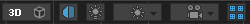
This is located in the top left corner of the Level Window
| In a collapsible toolbar at the top of the Level Window are a few buttons for altering the view. | |
|---|---|
| 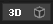 / 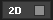 | Toggles between 2D & 3D cameras controls. |
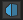 /  |
Toggles the editor camera’s rendering mode between Orthographic and Perspective Projection. |
|
Allows previewing of the game using the graphical setting of the actual game renderers. This can allow you to preview shadows you may have set up that wouldn’t show until you start running the game. |
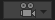
 |
With the camera options you can either reset the editor camera to its default settings, or align a selected camera with the editor’s camera. |
 / /  |
Toggles the grid line visuals in the editor. |
 / 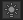
/ 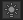 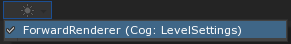
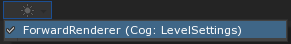{kind=link}
{kind=link}
Objects Window
Every level contains objects. An object can represent the floor, a wall, enemies, the player, and many other things. There are a few different buttons in the Objects Window that you should know about:
- Eyeball: Toggles visibility of an object only while in the editor. Objects with the eye button disabled will be invisible in the editor, but still visible when the level is played.
- Selection Lock: The small lock button can be turned on and off to toggle the ability to select an object from within the editor. This is especially helpful if you do not want to accidentally move an object.
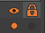
View of the eye and lock button in the Objects Window
The objects in the Objects Window can be searched for by name using the search bar. This feature can be invaluable if you have a level populated with dozens, or even hundreds, of objects. Each level has three objects by default:

Visible objects in the level by default
- Click on the object named: LevelSettings
- Once clicked, take a look at the Properties Window to the left of the Level Window
Properties Window
When an object is selected, the properties of that object are accessible from the Properties Window.
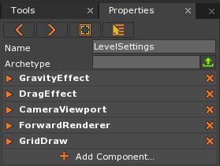
The Properties Window showing the Components of the LevelSettings object
The Properties Window is the primary means for editing or building objects–an object being comprised of multiple components.
- Component: a chunk of functionality or small bucket of data. An object’s behavior and purpose depends upon what components it contains. It is Components that make up the functionality of Game Objects. More details about components will be covered in a future lesson.
 This is located directly under the Properties tab in the Properties window
This is located directly under the Properties tab in the Properties window
| The Properties Navigational buttons allow for quick and efficient editing. | |
|---|---|
| 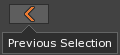 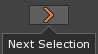 | These arrows allow you to navigate back and forth between recently selected items that have been shown in the Properties Window. |
| 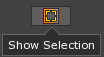 | The Show Selection button, on first click, pans the camera to the object and on second click, zooms in the camera to frame the selected object in the Level Window. |
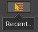 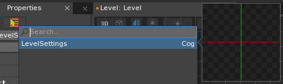 |
The recent button pulls up a drop down list of the recently accessed items for selection. |
Library Window
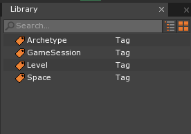
Library Window
Anything you add to the game using the Add command or through drag-and-drop importing is stored as a resource. All resources added to your project can be found in the Library Window. You’ll learn more details about resources in future lessons.
Search Window
This powerful tool allows you to search for various things within the editor. It also has several other uses such as selecting objects, opening archetypes, viewing properties, etc., that are accessible from here. For example, if you wanted to quickly access a script file, you can just open the search view and type in the name of the script to find it and begin editing. Another important use of the Search Window is for performing commands. See Executing Commands for information.
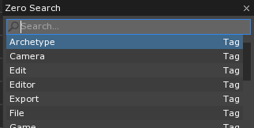
The Zero Search Window for performing commands
There are three ways to pull up the Zero Search Window:
- Click anywhere in the Level Window and press
Space - From any window press
Ctrl+Shift+Space - Click the Zero Search Button in the upper left-hand corner
Reopening Windows & Docking
One of the more helpful functions of Search Window commands is the ability to reopen closed windows and tabs.
Click the x on the Library tab to close the Library Window:
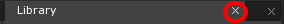
Press
Ctrl+Shift+Spaceto open the Zero Search WindowSearch for the Library command by typing “Library” without any quotes, then hit enter (or click on the Library command directly) to reopen the Library Window
This same process can be used to reopen many of these key windows. Once reopened, you can use a drag and drop technique on the tab of the window to “dock” it back into the same starting configuration. Docking locations are indicated by the editor with light blue regions as you hover over them. When you find the one you want to dock to, release the Left Mouse Button:
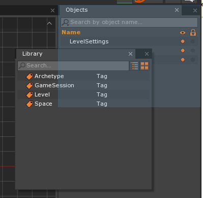
By pressing the Left Mouse Button + Dragging we can pull the Library Window to the upper right-hand corner to dock it
Console Window
- Press the Tilde
~key to open the Console Window. It should appear directly below the Level Window.
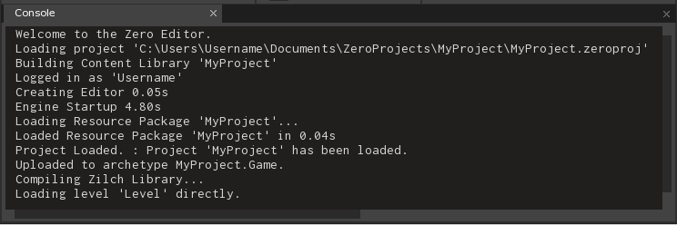
Console Window
- In the Console Window
- Press
Ctrl+Deleteto clear the console
- Press
- In the Level Window
- Press
Space - Type the command :
SaveProject - Press
Enter
- Press
A message telling you the project was saved is displayed in the Console Window
When console output is referenced in future lessons it will be shown like this:
Console Output:
Saved level file 'Level'.
Uploaded to archetype MyProject.Game.
Saved : Project and all scripts saved.
Lesson Structure
In each Lesson, instructions are laid out in a specific way to make them easier to understand. For example:
- In the Object Window
- Select the Player object
- In the Properties Window
- Add the RigidBody Component
- Under RigidBody
- Set AllowSleep to: False
Each level of indentation represents a subsection of the window you are already in, where the base window is the Editor itself. This makes it easier for you to know where to look in the editor for the information you seek. As the lessons progress some common steps will be cut for brevity, for instance:
- In the Level Window
- Press Space
- In the Search Window
- In the search bar
- Enter the Command:
CreateSprite - Press Enter
- Enter the Command:
- In the search bar
will be shortened to:
- Command:
CreateSprite
This significantly reduces the amount of reading, and while still providing a reference to the full process should you need a refresher.
Game Window
The Game Window is where your game actually runs inside the Zero Engine editor. You can test or play your game (or specific levels) here without having to create an executable.
- Command:
PlayGame
The Game Window tab should appear in a tab next to the Level Window tab:
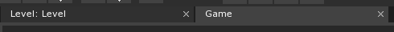
Game Window Tab
The Game Window should not show anything but a blank screen right now because we haven’t added any visible objects to our level yet:
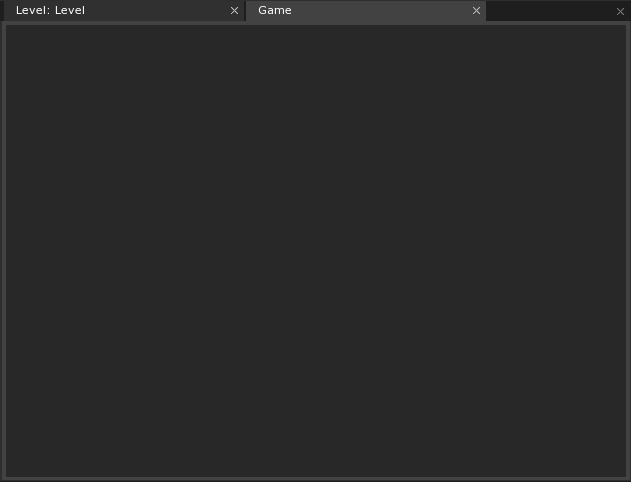
Game Window displaying empty level
- Close the Game Window by pressing the X button on the Game tab
- You can also press
Escor use Command :StopGame
Tip
It is a good practice to close your game window promptly. Editing levels while the Game Window is open can cause erratic behavior, undefined behavior, or errors.
- Click on the Level tab to return to the Level Window
Tools Window
This window contains several useful tools for managing various objects within the level. Settings for the current tool being used are also available here. You can switch tools from the drop-down selection or by using hotkeys.
- Click anywhere in the Level Window and press the
Number 1key on your keyboard. This is a hotkey for switching to the SelectTool.
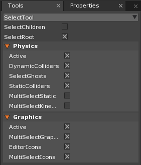
Tools window
Click on the drop-down selection in the Tools Window to display a list of tools you can use:
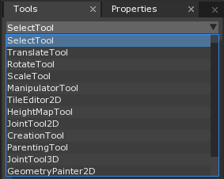
Tools drop-down selection
Tool Bar
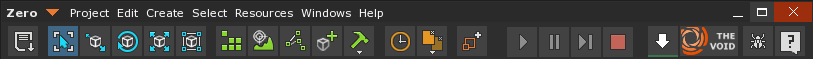
| The tool bar is located at the top left of the entire editor. Various buttons to perform common actions are located here. | |
|---|---|
 |
Saves the project and all the resources in your Library |
| 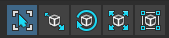 | These buttons line up with hotkeys 1-5 and they represent the some of the most commonly used tools for editing objects in the Level Window. |
| 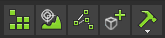 | These are correspond to other less common Tools that are available. |
| 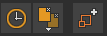 | These open windows in the Editor, such as the Library Window and the Add Window. |
| 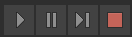 | These buttons allow you to run your game from the current level (F5), pause (F6), step through frame by frame (F7), or stop executing the game (F8). |
| 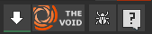 | These link to outside resources to get content, give bug reports, and request support. |
In order to find out more about the function of each button, you can hover over them to get a pop-up tool tip.
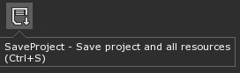
You can reach all the same functionality by searching in the Search Window.
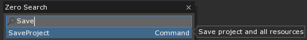
You may have noticed that you can play, pause, step through, and stop your game with the F5-F8 function keys. F9, F10, and F11 are also engine specific hotkeys. F9 will open the edit in game window for the first space, allowing you to edit objects in the scene while the game is running. F10 will toggle whether the cursor is trapped, meaning it is made invisible and locked to the center of the screen. F11 toggles fullscreen mode for the currently focused window.